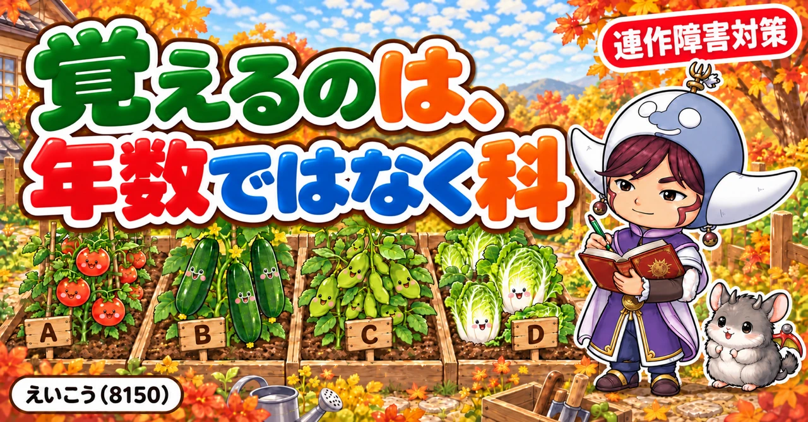
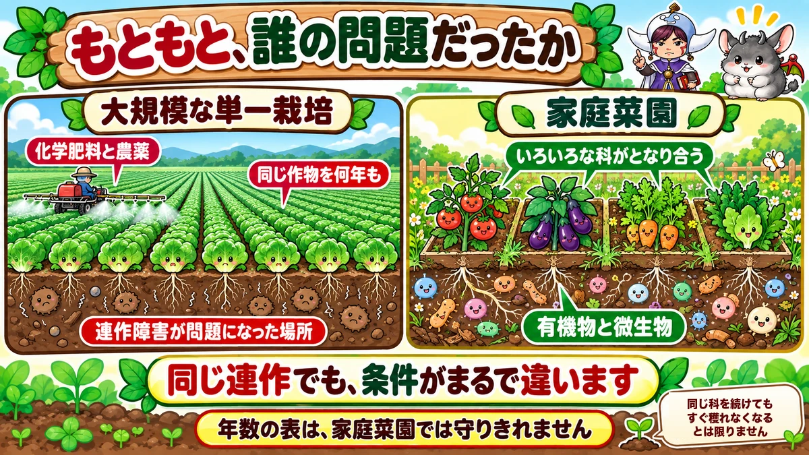
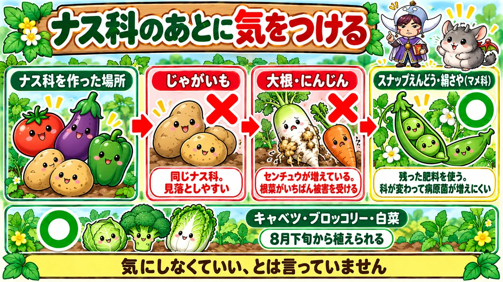
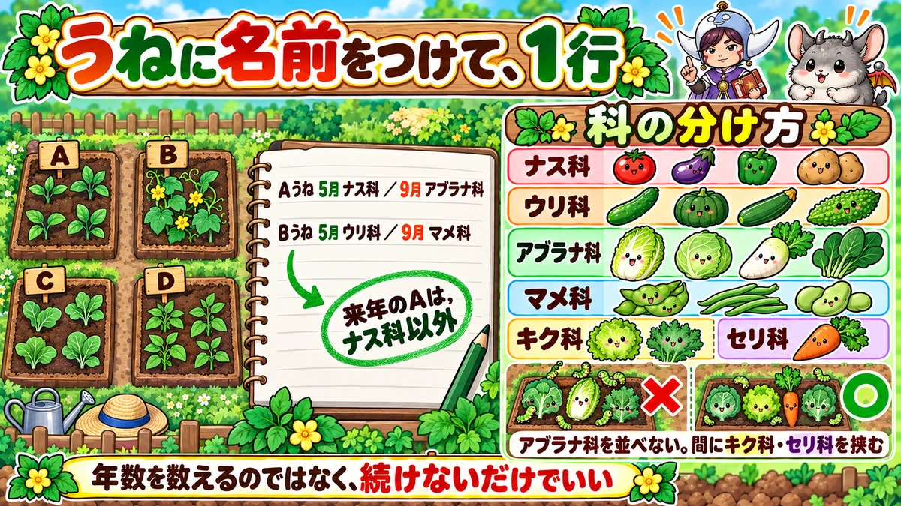

連作障害の対策帳｜休作年数・輪作・根の症状から考える

どうも、8150（えいこう）です🌱 家庭菜園歴8年、理科の教員免許を持っていて、有機・無農薬で野菜を育てています。
📖 この記事の目次
この記事で分かること
- 連作障害は、同じ作物や同じ科の栽培が重なる中で、病害虫や養分の偏りなどが関わって育ちに支障が出ることです。葉が小さいだけでは決められません。
- 植える場所は『何を育てたか』『病気や根の異常があったか』『何を土へ入れたか』を合わせて選びます。科の記録は、その入口になります。
- 休作の数字には、ナス・トマトで約3〜4年、ウリ科で2〜3年程度などの説明があります。ただし、作物や苗の条件が違い、過ぎれば安全という期限ではありません。
- 小さな畑では、育てたい野菜と適地を先に整理し、同じ科を続ける場所を減らす計画を立てます。日当たりや水はけを犠牲にしてまで移動する必要はありません。
- 接ぎ木苗、土づくり、混植は、それぞれ役割が違います。一つ取り入れれば、病気も肥料の偏りも全部解決するわけではありません。
- 片づけるときの根の観察を、次の作付けへつなげます。原因が分からない異常は、写真と栽培履歴を残して相談しましょう。
「去年のトマトの場所、今年はじゃがいもならええかな」。野菜の姿が違うと、別の仲間に見えますよね。ところが、この二つはどちらもナス科です。作物名だけで入れ替えると、知らないうちに同じ科を続けることがあります。
かといって、年数の一覧を守ろうとして、育てたいものが全部候補から消えるのも困ります。このページでは、植える前の確認、収穫後の片づけ、育ちが悪いときの見分け方を順番に整理します。いま場所選びで迷っているなら『早見』へ。すでに株が弱っているなら『失敗の見分け方』から読んでください。
覚える項目を増やすより、畑で見る場所を決めるのが先です。根の写真一枚、前作の名前一つでも、次の判断に役立ちます。みなさんの畑の状態を置き去りにしない計画にしていきましょう☺️
早見：連作障害対策（ひと目で分かる数字と判断）
休作の数字は、対象とセットで読む
休作は、その場所で対象の作物を作らずに間隔を取ることです。畑全体を何年も空っぽにする意味ではありません。ほかの野菜を作りながら、同じ作物へ戻る時期を考えます。
- ナス・トマトの場所選び：約3〜4年あける説明があります。自分の根で育つトマト苗について約3年とする説明と、ナス・トマトで3〜4年とする説明の幅です。
- きゅうり・すいかなどのウリ科：2〜3年程度の間隔を取る説明があります。苗の根を別の植物へつなぐ方法も、対策の一つとして扱われています。
- オクラ：約3年ごとに同じ場所へ戻す輪作例があります。根を加害する線虫への注意と合わせた説明で、ほかの作物すべてへ使える数字ではありません。
- 枝豆：プランターで収穫直後にもう一度まく相談では、3〜5年あける方が無難とする説明があります。一方、短期間の二度目の栽培を可能とする説明もあり、統一の間隔にはできません。
- にんじん：1年あける説明があります。数字の範囲を確定できない説明もあるため、このページでは全条件に共通する年数として扱いません。
- 連作に比較的強いとされる作物：大根、とうもろこし、ねぎなどには連作を認める説明や栽培例があります。それでも、病害虫や肥料の状態まで無条件に問題なしとは言えません。
この数字は、場所を比較するための目安です。「あと何日で安全になるか」を示すものではありません。過去に大きな病害があった土は、年数だけで元に戻ったと判断しないでください。
逆に、間隔を取れなかった時点で収穫がゼロに決まるわけでもありません。『同じ科が続く』『実際に障害が出た』は別に記録します。連作した事実と、畑の結果を分けておくと、次の対策を考えやすくなります。
作付けを決めるときの早見
- 確認する時期：苗や種を買う前、前作の片づけ時、次の土づくり前のそれぞれで確認します。苗を買ってから空き場所だけ探すと、候補を変えにくくなります。
- 記録する場所：うね、区画、プランターごと。同じ庭の中でも、育てた作物や土の履歴が違えば分けます。
- 前作の記録：作物名と科、植えた時期、片づけた時期。前年の夏だけでなく、その間に育てた秋冬の野菜も含めます。
- 異常の記録：しおれ、枯れ、根のこぶ、生育のばらつき。『元気なし』だけで終えず、どこに何があったかを短く書きます。
- 肥料の記録：植える前に入れたものと、栽培中に足したもの。量が分からなければ『量不明』のまま残し、あとから数字を作りません。
- 植え時・株間・うね幅：次に育てる野菜の品種と地域に合わせます。連作対策として全作物共通の幅や日付は決められません。
- 元肥と追肥：前作の残りと土の状態を踏まえます。休作した場所も、使い続けた場所も、毎回同じ量を足す前提にはしません。
- 収穫までの日数：選んだ作物の種袋や苗の表示で確認します。収穫が遅れると、予定していた後作の適期に間に合わないことがあります。
- 処理後に植えるまでの期間：取り入れる土の処理法によって変わります。土を温める方法や有機物を混ぜる方法を、同じ待ち日数にまとめないでください。
連作障害は一つの野菜の育て方ではなく、複数の作物をつなぐ話です。そこで数字の早見も、『何cmに植えるか』より『いつ、何を確認するか』を中心にしています。作物ごとの栽培条件は、場所選びを終えてから具体的に詰めましょう。
迷ったときに優先する確認
- 前作の名前を調べ、同じ科を続ける候補を見つけた
- 枯れた株や根に異常があった場所を区別した
- 日当たりと水の抜け方を確認した
- 前作で入れた肥料を振り返った
- 片づけから次の植え付けまで、準備の時間を確保した
特に、病気が疑われる場所を「たまたま空いているから」で使わないこと。空き区画と、安心して選べる区画は同じではありません。場所が足りなければ、株数を減らす、ほかの作物に替える、別の容器を使うといった計画の変更も候補になります。
植え場所を替えたら、次の野菜がそこで育つ条件も見直します。連作を避けることに集中して、日陰へトマトを移したり、水がたまる所へ根菜をまいたりすると、別の困りごとが出ます。畑の見取り図には、作物の履歴と一緒に日当たり・湿りも書いておくと便利です。
作業の手順（時期の順）
1．買い物の前に、畑の履歴を見える形にする
- うねや区画に、A・Bなどの呼び名を付けます。プランターなら容器を区別できる印を付けてください。
- 今ある作物と、分かる範囲の前作を書き出します。記憶があいまいな場所は『前作不明』とします。
- 作物名の横に科を書き、同じ仲間がどこへ集中しているか見ます。
- 枯れた場所、根に異常があった場所、雨のあと湿る場所を別の印で示します。
最初から立派な栽培日誌を作らなくても大丈夫です。例えば『A：春じゃがいも、夏は空き、秋に小松菜予定』なら、春のナス科と秋のアブラナ科を分けて見られます。これは記録の書き方の例で、どの畑にも勧める輪作コースではありません。
科が分からない野菜は、その名前を残すだけでも進められます。分類を調べる前に、去年の作物名まで忘れてしまう方がもったいないです。トマト、なす、ピーマン、じゃがいもはナス科、きゅうりやすいかはウリ科。この辺りから確認すると、夏野菜の場所選びに結びつきます。
区画を分けるのは、病原体がその線で止まるからではありません。どこで何が起きたか、読み返せるようにするためです。地面に引いた境界だけで土の状態まで分かれるわけではないので、異常が隣へ広がっていないかも見ます。
2．育てたい野菜と、その野菜が育つ場所を合わせる
- 今季に育てたい作物を書きます。食べたいものを全部置く前に、優先したいものを決めます。
- それぞれの日当たり、水はけ、植え時を確かめます。
- 前作の科と重ならず、栽培条件も合う区画から割り当てます。
- 同じ科が重なる区画は、過去の異常、苗の種類、土の準備を追加で検討します。
- 候補が足りなければ株数や作物を調整し、余裕を残します。
ナス科をたくさん育てたい畑では、作物名を変えるだけで回すのが難しくなります。トマトをなすに替えても科は同じ。じゃがいもへ替えても同じです。ここを先に見つけておけば、買った苗を抱えて「もうここしかないわ」とならずに済みます。
一つの科をすべて排除する必要はありません。前年と同じ所へ置く作物を減らしつつ、別の科も取り入れる計画を考えます。病気の履歴がある区画については、気にしすぎないという一般論より、その異常への対応を先に置いてください。

家庭菜園の多品目栽培と、広い面積で同じ作物を続ける栽培では条件が違います。図はその違いを整理する入口として見てください。小面積なら病気が出ない、有機栽培なら根が傷まないという保証にはできません。
3．輪作の案は、前年の夏だけで決めない
- 同じ場所で育てた春、夏、秋冬の作物を順につなげます。
- 間に挟んだ野菜も科を確認します。
- 次に植えたい作物と、前作・それ以前の病害履歴を比較します。
- 植え時が合う候補を残し、同じ作物へ短期間で戻っていないか確かめます。
夏のナス科のあとに別の科を一作入れたとしても、それだけで過去の履歴が消えるわけではありません。翌夏に同じ場所へなすを戻すなら、以前になすを育てた事実も記録に残します。『直前の科が違う』と『十分な間隔を取った』は、分けて考えたいところです。
マメ科も、作物名を変えれば別になるわけではありません。そら豆の前に枝豆やえんどうを挟む場合は、同じ科を続ける組み方になります。夏と冬で姿が変わるので、ここはうっかりしやすいんですよね。
一年に何作するかは、地域と作物の適期で変わります。収穫を延ばす予定なら、後作の植え付けを遅らせても育つか確認。輪作の矢印だけ先に完成させず、畑を片づけられる日まで予定に入れてください。
4．収穫を終えるときに、地上部と根をセットで見る
- 片づける前に、株全体と区画の様子を写真に残します。
- 株を抜いたとき、根の形、こぶの有無、傷みを見ます。
- 同じ区画のほかの株と比べ、異常が一株だけか、まとまっているか記録します。
- 根に不審なこぶがある場所は、すぐに大根やにんじんを植える候補から外して原因を確認します。
- 病気が疑われる株は、健全な片づけ残りと分けて扱います。
葉が少し弱っていても、収穫が終わると「あー終わった」で片づけたくなります。でも、その根には次の作付けに使える情報があります。根を土ごと片づける前に、少しだけ観察の時間を取りましょう。
こぶは、見つけた瞬間に病名まで決める材料ではありません。枝豆やいんげんの根には、窒素に関わる根粒が付くことがあります。一方、根を加害する線虫によって膨らみができることもあります。マメ科だから全部安心、丸いから全部線虫という判断は避けます。
異常が疑われるときは、作物名、根の写真、葉の状態、発生した区画を合わせて相談してください。根だけの写真より、栽培中の経過がある方が状況を伝えやすくなります。
5．後作は、科と根の状態と残った肥料で選ぶ
- 前作と違う科の候補を出します。
- 根の異常や病害の疑いがある場合は、その問題を優先して候補を絞ります。
- 前作へ入れた肥料と、その作物の生育を振り返ります。
- 残っている肥料が多そうな場所は、次の元肥を自動的に足さず、土の状態を調べます。
- 地域の植え時に合う作物へ決めます。

図の組み合わせは、前作を思い出すきっかけに使ってください。本文で判断するときは、同科の連続と、線虫などが複数の作物へ関わる場合を分けます。例えばナス科のあとにじゃがいもを置くのは、同じ科が続く話。根にこぶがあった場所で根菜を見送るのは、被害の疑いを後作へ持ち越さないための話です。
葉物を後作の候補にする説明もあります。ただ、葉物という呼び名は食べる部分の分類です。白菜、小松菜、キャベツならいずれもアブラナ科。『葉物へ替えたから科も変わった』とは限りません。
マメ科を入れる場合も、肥料が多い土を必ず整えてくれると期待しないでください。科が変わること、残った養分を利用すること、前作の病害虫の影響を避けることは、それぞれ確認する項目になります。
6．土づくりは、足す前に履歴を確認する
- 前作で何を土へ入れたか読み返します。
- 雨後の水の抜け方、乾き方、根の育ちを確認します。
- 生育不良が続く場合は、肥料不足と決めず、土の検査や栽培相談を考えます。
- 有機物を利用する場合は、材料の状態と目的に合う方法を選びます。
- 病気の疑いがある残りを、通常の土づくりへそのまま混ぜる計画にしません。
土づくりというと、何かを足す作業が浮かびますよね。けれど、すでに多い成分があれば、追加しても偏りは直りません。今の土がどうなっているかを知る作業も、土づくりに含まれます。
複数の方法を一度に試すと、後で何が影響したか分かりにくくなります。苗を替え、肥料を増やし、混植も変えて育ちが良くなったとしても、どれが役立ったかは区別できません。比較したいなら、何を変更したかが分かる記録を残しましょう。
7．苗の種類は、場所の問題に合わせて選ぶ
- 種から育てた苗や購入苗が、自分の根で育つ苗か、接ぎ木苗か確かめます。
- 同じ科を続ける場所や病害の履歴がある場所では、苗の表示を詳しく見ます。
- 接ぎ木苗なら、根側の台木がどんな病害への抵抗性を持つか確認します。
- 苗を替えても、肥料や水はけの準備は続けます。
自分の根で育つ苗を、自根苗と呼びます。接ぎ木苗は、根を担当する台木と、収穫したい実を付ける側をつないだ苗です。名前が難しそうでも、『根の担当が違う』と整理すると分かりやすいかなと思います。
接ぎ木苗を連作対策の候補にする説明があります。ただし、どの苗も同じ抵抗性ではありません。前年の異常が何だったか分からないまま、『接ぎ木』の文字だけで全部防げると考えないこと。自根苗を選ぶなら、品種選びや費用面の利点と一緒に、場所の履歴も見ます。
8．栽培中の変化を残し、次の片づけへつなげる
- 生育が悪い株は、症状が出た日と場所を記録します。
- 土の湿り、周囲の株、葉や茎の変化を見ます。
- 水や肥料を変えたら、作業した日も書きます。
- 枯れや異常が続く場合は、原因を確かめる相談へ切り替えます。
- 収穫後の根の観察を、その記録へ足します。

科の記録から始め、結果が出たら症状を一行足す。これなら、日誌を書くこと自体が重荷になりにくいです。例えば『前作トマト、今回はなす、区画の端でしおれ、根は写真あり』なら、作付けと異常をつなげて読み返せます。
収穫できた区画の記録も残します。うまく育った事実は参考になりますが、一回の成功で次も安全と決めないこと。季節、苗、肥料、土の湿りが変われば、同じ場所でも結果は変わります。良かった条件を残しながら、来季も実物を見て選びましょう。
失敗の見分け方（症状→原因→やること）
育ちが悪いと「連作したからや」と考えたくなりますが、症状だけで原因を一つに絞るのは早いです。ここでは、畑で確認できることと、その後の行動を分けて整理します。病名を決める一覧ではなく、相談や作付けの見直しへ進むための確認帳として使ってください。
去年より株が小さい、収穫が少ない
- 症状：同じ場所の株が前回ほど伸びず、実や葉の収穫も少なくなっています。
- 考えられる原因：養分の偏り、根を加害する病害虫、水分や気温の違いなど。作物や品種、苗の状態が変わっている可能性もあります。
- やること：前年と今回の作物、植えた時期、苗、肥料を並べて確認します。土の湿りと根の状態も見て、肥料を増やす判断はそのあとにします。
収穫量だけで比べると、植えた株数や収穫期間の違いを見落とします。前回は長く収穫し、今回は早く片づけたなら、合計が少なくても土の悪化とは限りません。『いつから弱ったか』『同じ区画の全部か』まで調べてください。
一方、毎回同じ場所で同じ傾向が続くなら、その区画の問題を優先して調べる理由になります。原因不明のまま同じ作物を戻すより、土や根の相談を先にした方が、次の準備を絞れます。
しおれる、途中で枯れる
- 症状：葉や茎がしおれ、回復しない株が出ています。
- 考えられる原因：乾燥、過湿による根の不調、土壌病害など。同科の栽培履歴は手掛かりですが、それだけでは病気と確定できません。
- やること：水を足す前に土が乾いているか確認します。発生した株と区画を写真に残し、前作や苗の種類を添えて相談します。
枯れた株を見て、連作した事実だけを拾うと、水がたまっている場所や植え付け直後の根の傷みを見逃します。逆に、土が湿っているから過湿に決まっている、と決めるのも同じです。観察できた事実を並べ、分からない部分は分からないまま相談へ持っていきます。
とりわけ、同じ区画で枯れが繰り返されるなら、次の苗を植えて様子を見るだけの対応は避けたいです。別の作物を一作挟んだことも伝えてください。間に栽培したものがあっても、過去の病害の疑いは記録から消しません。
抜いた根にこぶや膨らみがある
- 症状：根の一部が膨らんでいる、こぶのような形が見えます。
- 考えられる原因：根を加害する線虫、別の根の病気、マメ科の根粒など。作物と根の形によって考える内容が変わります。
- やること：作物名と根全体が分かる写真を残します。病害の疑いがあれば、その場所への後作を急がず、原因を確認します。
根のこぶと聞いて、すべて同じ病名で扱わないでください。ネコブセンチュウによる被害と、アブラナ科で問題になる根こぶ病は、名前が似ていても別の話です。根粒も含めて、見た目の一語だけで対策を選ばないことが大切です。
枝豆やいんげんで丸い粒が見えた場合は、根粒の可能性を考えます。ただし、マメ科にも根の障害は起こり得るので、『マメ科なら全部正常』とは判断しません。葉の生育と根の状態を合わせ、気になる形は写真で確認しましょう。
線虫の被害が疑われる夏野菜の根を見つけたら、秋の大根やにんじんの予定をいったん止めます。科を替えるだけで避けられる問題かどうか、先に調べるためです。植え時が迫っていると急ぎたくなりますが、候補を変える時間も準備の一部です。
根菜が曲がる、形がそろわない
- 症状：大根やにんじんの根が不ぞろいで、思った形に育っていません。
- 考えられる原因：根の生育を妨げる土の状態や根の傷みなど。前作の根に異常があれば、線虫被害も調べる対象になります。
- やること：曲がりだけで連作障害にせず、根のこぶや傷みを確認します。前作の作物と、その根の写真があれば一緒に読み返します。
根菜は食べる部分が土の中にあるので、抜いて初めて異常に気づくことがあります。形の悪さだけを見て、ナス科のあとだからと原因を決めないでください。前作がナス科でも根が健全だった場所と、前作でこぶを確認した場所では、調べる優先順位が違います。
この区別は、後作の候補を狭めすぎないためにも役立ちます。すべてのナス科後作を永久に根菜禁止にする必要はありません。異常の有無が分からないなら、分からないまま成功を保証せず、片づけ時の観察から記録を増やしましょう。
トマトの実の下側が黒く傷む
- 症状：実の先端側、いわゆるお尻の部分に黒い傷みが出ます。
- 考えられる原因：尻腐れと呼ばれる生理障害が考えられます。病原菌の増殖による病気とは区別する必要があります。
- やること：根や水分、肥料管理の状態を確認します。連作の履歴だけで土壌病害と扱わず、実の症状として相談してください。
『土に関係する不調』と『土に病原体がいる病気』は同じではありません。必要な成分があっても、根が十分に利用できない状態なら生理障害に関わることがあります。黒い実を見た時点で消毒へ飛ぶより、何が起きているかを分ける方が先です。
葉の色が薄いので、何度も追肥したくなる
- 症状：葉が薄い色で生長も弱く、肥料が足りないように見えます。
- 考えられる原因：養分不足だけでなく、根の不調や土の条件によって吸収が進まない可能性もあります。
- やること：直前に入れた肥料と土の湿りを確認し、追加する前に根や区画全体の状態を見ます。続く不調は、土の検査や栽培相談へつなげます。
元気がないから足す、変わらないからまた足す。この繰り返しでは、必要量が分からないまま投入だけ増えてしまいます。養分の偏りが問題なら、肥料の総量を増やすだけでは整理できません。何を足したか分からなくなった場合も、『不明』を含めて記録してください。
科を替えたのに、同じ場所でまた不調が出る
- 症状：前回とは別の科を選んだのに、同じ区画で生育不良が続きます。
- 考えられる原因：複数の作物へ関わる病害虫、養分の偏り、水はけなど、科を替えるだけでは変わらない問題があります。
- やること：直前の作物だけでなく、以前の履歴を読み返します。区画の環境と根を確認し、輪作以外に必要な対応を考えます。
別の科を選んだ作業が無意味だったわけではありません。対策の守備範囲が違うということです。科の連続を減らす役割と、水の逃げ道を作る役割は別。原因に合う作業を追加するために、どこでつまずいたかを記録しましょう。
説明が分かれていること
ここには、同じ言葉でも条件や目的が違う説明をまとめました。どちらか一つを選んで、すべての畑へ当てはめるための章ではありません。みなさんの畑が、どの条件に近いかを見てください。
ナス・トマトは約3〜4年あけるか、連作を気にしすぎないか
- Aという説明：自根トマトでは約3年、ナスやトマトでは3〜4年、同じ科を育てていない場所を選びます。
- Bという説明：少量多品種の家庭菜園では、年数に縛られすぎず、作りたい野菜と適地を重視します。トマトを続けて育てられた例もあります。
- どう考えればよいか：移せる適地があれば優先し、難しければ履歴・苗・根の状態を詳しく確認します。連作できた例だけで、自分の畑にも障害が出ないとは決めません。
連作の成功例は、『その条件で収穫できた』という情報です。その後の年まで保証するものではありません。休作年数の説明も、『その年数を過ぎれば、どの病害も消える』という約束ではないです。両方を、場所を選ぶための材料として扱いましょう。
枝豆を収穫したら、同じ場所へもう一度まいてよいか
- Aという説明：短期間に二度目の栽培をすることは可能とされています。
- Bという説明：プランターでの再播種の相談には、3〜5年あける方が無難という回答があります。
- どう考えればよいか：栽培場所と土の扱いをそろえて考えます。二度まけるという一言を、容器も土もそのまま使い続けてよい意味に広げないでください。
畑とプランターでは、根が使う土の範囲や管理の方法が違います。『枝豆』という作物名だけを共通点にして、二つの説明を一つの結論へまとめるのは難しいです。前作の生育が悪かった容器なら、再播種より先に原因と土の状態を見直します。
じゃがいものあとに大根を選べるか、避けるか
- Aという説明：じゃがいも後の大根やにんじんを後作に向かないとする説明があります。
- Bという説明：大根とじゃがいもを入れ替えて育てる実例もあります。
- どう考えればよいか：一律禁止にも成功保証にもせず、前作の根と土の履歴を見ます。根の異常があった場所は、組み合わせの実例だけを頼りに使わないでください。
じゃがいもはナス科、大根はアブラナ科なので、科の入れ替えにはなります。それでも、科が違えば病害虫の影響をすべて避けられるわけではありません。後作の相性を考えるときには、『科を替える』より詳しい確認が必要になる場面があります。
ねぎは続けて育てられるか、にんにくのあとを避けるか
- Aという説明：ねぎを長く同じ場所で育てている例があります。
- Bという説明：にんにく収穫後のねぎは、共通する病害虫への懸念から避ける説明があります。
- どう考えればよいか：ねぎが続けられた例と、病害虫を持ち越しやすい前作の注意を分けます。前作にさび病や害虫の問題があったなら、その履歴を優先してください。
ねぎ類は見た目が違っても、共通の問題を持つことがあります。『ねぎは連作できる』だけを覚えて、前のにんにくの異常を消さないようにしましょう。逆に、異常のない栽培実例を、病害のあった畑の証明としては使えません。
一作違う野菜を挟めば、元の作物へ戻せるか
- Aという説明：別の科を間に入れ、作付けを回す方法があります。
- Bという説明：間に違う作物を育てても、再びなすを植えて枯れた例があります。
- どう考えればよいか：輪作は履歴を消す作業ではありません。元の作物へ戻る間隔と、過去の異常を合わせて確認します。
この食い違いから、『輪作は意味がない』とは言えません。別の作物を入れたという情報だけでは、その畑の病原体や養分の状態まで分からないからです。作物の入れ替えに加えて何を確かめる必要があるか、考える材料になります。
土に有機物を入れれば十分か、病害対策も要るか
- Aという説明：多様な植物や有機物を利用し、土の生きものが活動できる環境を整えることを重視します。
- Bという説明：土の栄養バランスを調べたり、病害を避ける苗や作付けを選んだりすることを重視します。
- どう考えればよいか：土づくりと、すでに起きた異常への対応を両方考えます。有機物を入れた事実だけで、病原体が減ったと判断しないでください。
土にいろいろな生きものがいることと、栽培したい野菜に害を与えるものが問題にならないことは、同じ意味ではありません。環境を整える作業は続けつつ、繰り返す異常には具体的に対応します。『自然に任せる』だけで相談を先延ばしにしないことも大切です。
残った株は土へ戻すか、分けて扱うか
- Aという説明：栽培後の植物を利用し、有機物や養分を土へ還元します。
- Bという説明：病気が疑われる残りは、汚染を持ち越す可能性を考えて慎重に扱います。
- どう考えればよいか：健全な材料を利用する話と、病気の材料を安全に処理する話を分けます。普通に戻せば無害になる、とは考えないでください。
残りを活用すること自体が目的になると、病気の疑いまで見落とします。特に、枯れの原因が分からない株は、材料として使う前に確認する必要があります。処理法が不明なものを、新しい苗の近くへそのまま混ぜないようにしましょう。
太陽熱を使う方法は、季節が違っても同じか
- Aという説明：夏の強い日差しを使い、土の病害虫への対策を行います。
- Bという説明：涼しい時期に土を覆い、微生物の活動を促す方法があります。
- どう考えればよいか：目的が違うので、温度や日数を交換しません。冬の方法を行ったから夏の消毒と同じ結果になった、とは判断できません。
実施するなら、時期、土の水分、覆い方、処理する深さ、期間を確認して予定に入れます。表面が暖かかったことだけでは、根のある深さまで十分に処理できたか分かりません。ここでは、どの畑でも使える成功温度や待ち日数は置きません。
混植すれば安心か、補助として考えるか
- Aという説明：違う植物を一緒に育て、畑の多様性や生育を助ける働きを利用します。
- Bという説明：混植しても病害虫を完全に防いだり、被害をなくしたりできるわけではありません。
- どう考えればよいか：何を狙う組み合わせか確認し、輪作や根の観察を続けます。近くに植える相性と、片づけ後に植える相性も分けてください。
一緒に育てる植物をコンパニオンプランツと呼ぶことがあります。ただし、虫への働き、土の生きものへの働き、養分の使い方は別々です。『相性が良い』という言葉だけで、連作障害の全原因へ効く説明に広げないようにしましょう。
よくある質問
連作したら、必ず育たなくなりますか
必ずではありません。同じ場所で収穫できた例もあります。ただし、連作で病害虫や養分の偏りが問題になることもあります。『作り続けた』ことと『どんな結果だったか』を別に記録しましょう。
連作障害と連作は、同じ意味ですか
連作は、同じ場所で同じ作物などの栽培を繰り返す行為です。連作障害は、それに関わる条件の中で生育に支障が出ること。連作しただけで、障害が出たとは言えません。
トマトのあとにじゃがいもなら、仲間を替えたことになりますか
どちらもナス科なので、科を替えたことにはなりません。実を食べる野菜と土の中を収穫する野菜という見た目の違いで分けず、科を確認してください。
違う科なら、後作は何でも選べますか
科が違っても、共通する病害虫や土の状態に注意が必要です。前作の根の異常、残った肥料、次の作物の適期と日当たりを合わせて選びます。
畑が狭くて、休作年数を守れません
まず、栽培条件が合う場所と病害履歴を整理してください。同科の重なりを減らす、株数を調整する、苗の種類を検討するといった選択があります。年数を守れないことだけで、栽培そのものを諦める必要はありません。
プランターの土も、記録した方がよいですか
はい。容器ごとに作物、根の異常、肥料の履歴を残すと、次の土の扱いを考えやすくなります。土を別の容器へ移した場合も、その履歴は引き継いでください。
何も植えずに休ませれば、土は安全になりますか
空けた期間だけでは、安全と判断できません。病害虫や養分の状態は、待った年数から読み取れないためです。過去に異常があった場所は、その問題への確認も続けます。
接ぎ木苗なら、同じ場所でも何の準備もいりませんか
準備は必要です。台木の抵抗性は対象となる病害によって異なり、養分の偏りや水はけを全部直すものではありません。苗の表示と場所の履歴を合わせて確認します。
自分で種から育てた苗は、使わない方がよいですか
自根苗が一律に悪いわけではありません。品種を選べる利点もあります。使う場所で同科を続けていないか、過去に根の異常や枯れがなかったか確認し、苗の性質に合わせて場所を選びましょう。
根に丸いものがあったら、すべて線虫の被害ですか
そうとは限りません。マメ科の根粒など、別のものもあります。作物名、根全体の形、地上部の生育を合わせて見ます。分からない膨らみは、写真を残して確認してください。
葉物を挟めば、連作の履歴は消えますか
消えません。間に別の科を育てることは計画の一つですが、以前の病害や同じ作物を育てた時期も残します。葉物どうしで同じ科になる場合も確認してください。
肥料を多めに入れれば、連作障害を防げますか
総量を増やすだけでは、養分の偏りも病害虫も解決できません。足りないのか、余っているのか、根が利用できていないのかを分けます。前作への投入記録を見てから考えましょう。
緑肥を育てれば、すぐ次の苗を植えられますか
緑肥は、土へ戻すなどして利用するために育てる植物です。種類や育て方、利用する目的で段取りが変わります。すき込んだ直後に何でも植えてよいとせず、次の植え付けまでの扱いを確認してください。
生育が悪い株を見つけたら、最初に何をしますか
土の湿りと株の状態を見て、発生日と場所を記録します。前作、苗、肥料の履歴を確認し、いきなり追肥だけで立て直そうとしないこと。異常が続く場合は、写真を添えて相談します。
去年のことを、まったく覚えていません
今育てている作物から始めれば大丈夫です。過去は『不明』として、片づけ時に根の写真を残してください。架空の記録で埋めるより、今日の事実を一つ残す方が来季に役立ちます。
学ぶ：連作障害のしくみ🔬
同じ野菜が続くと、土との関係も似たものになる
野菜は、土から水と養分を受け取って育ちます。同じ作物を繰り返すと、根の働きや利用する養分、関わりやすい病害虫にも似た傾向が続きます。そこで起きる偏りを、病害虫と栄養の両方から見るのが連作障害を考える入口です。
ただし、『同じ野菜は同じ成分だけを食べる』という意味ではありません。トマトにも白菜にも複数の養分が必要です。偏りは、一つの成分だけが消える単純な話ではなく、作物が使ったものと、土へ補ったものの関係で考えます。
前作がよく育ったから肥料が全部なくなった、収穫が少なかったから肥料がそのまま残った、とも決められません。育ち方だけで土の中の成分を測ることはできないからです。記録と観察で見当を付け、必要なら土を調べる。ここを順番に進めます。
科は便利な分類でも、病害虫の境界線ではない
科は、植物の仲間を大きく分けるときの分類です。見た目の違うトマトとじゃがいもがナス科に入るように、食べる部分が違っても仲間が近い場合があります。科で記録すると、作物名だけでは気づきにくい連続を見つけられます。
けれど、病害虫が必ず一つの科だけを相手にするとは限りません。根を加害する線虫のように、科をまたいだ影響を考える必要があるものもあります。科を替える計画と、根の異常への対応を別々に持つ理由はここです。
逆に、同じ科のすべての野菜が、まったく同じ病害に同じ強さで反応するとも言えません。科単位の早見は入口として便利ですが、異常が出た段階では、作物名や苗の性質まで確認する必要があります。分類を細かくすることで、選ぶ対策も具体的になります。
根が傷むと、土にあるものを使いにくくなる
土に水や養分があっても、それを受け取る根が働けなければ、株の生育は落ちます。病害虫による根の傷みも、水分条件による不調も、地上部には『元気がない』という似た形で現れることがあります。
これが、葉だけ見て肥料不足と決められない理由です。必要なものが少ない場合と、あっても取り込みにくい場合では、やることが変わります。土が湿ったままなのに水を増やす、根の不調を調べず肥料を増やす。こうした作業は、原因へ届いていない可能性があります。
根の観察は、収穫を終えて抜くときなら取り入れやすいです。普段は見えない場所が、片づけの時だけ見えるわけですね。葉の写真と合わせて残すと、上の症状と下の状態を結びつけて考えられます🔬
土の生きものは、全部同じ役割ではない
土の中には、植物の残りを分解するもの、根と関わるもの、作物へ害を与えるものなど、いろいろな生きものがいます。微生物が多ければ、その数だけ野菜に役立つとは限りません。『いるかどうか』に加えて、どんな働きが起きているかを考える必要があります。
病気に関わるものと、それを抑える方向に働くものの関係に注目する見方もあります。ただ、この関係がどの畑でも同じように成立するとは言えません。病害が出たら自動的に抑え役が増え、次には収穫できるという順番を予定には組み込めないです。
『土が自然に落ち着くのを待つ』という考えを採る場合も、株の異常を観察しない理由にはしません。繰り返す枯れがあれば、その場所を使い続ける前に調べます。土の生きものへ関心を持つことと、個別の病害へ対応することは両立します。
多様性を増やすことと、特定の問題を抑えること
いろいろな作物を育て、有機物を利用して土の環境を整える方法は、同じ作物だけを繰り返す状態と違う条件を作ります。家庭菜園の少量多品種を重視する説明は、この違いに注目しています。
それでも、種類を増やした数だけ病害が減る計算にはできません。混植の相手や土の条件が違えば、働きも変わります。地上の虫を抑えるための植物と、根の病害への対策を、同じ役割として扱わないでください。
同時に隣へ植えるのが混植、時間をずらして作物を替えるのが輪作です。二つを組み合わせることはできますが、記録では分けます。『横に何があったか』『前に何を育てたか』を書き分けると、後で相性の話を混同しにくくなります。
休作年数は、土の中を直接測った数字ではない
年数をあける目安は、作付けの計画に使いやすい数字です。ところが、暦が進むことと、土の中の問題が解消することは同じではありません。間に何を育てたか、どんな病害虫が関わっているか、土の管理がどうだったかで条件が変わります。
『三年経った』という記録から分かるのは、経過した時間です。根が健全か、肥料が偏っていないか、病害の原因が残っているかは別に調べます。休作の数字だけで判断が終わらないのは、目安が役に立たないからではなく、示している情報に範囲があるからです。
理科として面白いのは、同じ『育たない』からいくつもの原因を考えられるところです。去年の場所、葉の変化、抜いた根、雨のあと。この実物と記録をつなぐと、単に年数を暗記するより、次に何を確かめればよいかが見えてきます。
まとめ
連作障害の対策は、『科の履歴を見る』『異常を観察する』『原因に合う準備を選ぶ』という流れで整理できます。同じ作物を続けた事実だけで失敗と決めず、同じ場所で育った事実だけで次も安心と決めないこと。この二つを分けると、計画が立てやすくなります。
植える前は、次の確認から進めてください。
- 作物名と科を、区画や容器ごとに書く
- 前作の枯れや根の異常を確認する
- 日当たり、水はけ、次の作物の適期を合わせる
- 肥料の履歴を読み返し、自動的な追加を避ける
- 同じ科が重なるなら、場所・株数・苗の選択を見直す
片づけるときは、根を見る時間を取ります。こぶがあれば全部同じ病気と決めず、作物名と写真を残してください。異常のある場所の後作は、科を替えたことだけで安心せず、原因の確認を先にします。
休作の目安には異なる説明があります。年数を比べるときは、作物、自根苗か接ぎ木苗か、畑か容器か、過去の病害を一緒に見ます。土づくり、輪作、混植、苗の選択も、それぞれが担う役割を確かめて取り入れましょう。
ここまで読んでくださって、ありがとうございます。今日始めるなら、『この場所に、いま何を育てているか』を一行残してください。次に抜く株では、根の写真を一枚。そこから、みなさんの畑に合う判断材料が増えていくかなと思います🌱
えん麦（緑肥）
作るものがない時期に畑を空けておくより、緑肥をまいて根を張らせるほうが土が締まりません。刈って敷けばそのまま有機物になります。
![[商品価格に関しましては、リンクが作成された時点と現時点で情報が変更されている場合がございます。]](https://hbb.afl.rakuten.co.jp/hgb/56d21de3.ae31fd42.56d21de4.bc885a0a/?me_id=1381384&item_id=10000017&pc=https%3A%2F%2Fthumbnail.image.rakuten.co.jp%2F%400_mall%2Fyohonsha%2Fcabinet%2F10419213%2Fcompass1768461115.jpg%3F_ex%3D240x240&s=240x240&t=picttext "[商品価格に関しましては、リンクが作成された時点と現時点で情報が変更されている場合がございます。]")

米ぬか
土の中の微生物を増やすのに、いちばん手軽な材料です。入れすぎると虫が湧くので、うすく広くが基本です。
![[商品価格に関しましては、リンクが作成された時点と現時点で情報が変更されている場合がございます。]](https://hbb.afl.rakuten.co.jp/hgb/56d21cb1.eebb183f.56d21cb2.51de80a8/?me_id=1247635&item_id=10000021&pc=https%3A%2F%2Fthumbnail.image.rakuten.co.jp%2F%400_mall%2Feco-hiryo%2Fcabinet%2Fitem6%2Fset-1-a1.jpg%3F_ex%3D240x240&s=240x240&t=picttext "[商品価格に関しましては、リンクが作成された時点と現時点で情報が変更されている場合がございます。]")
マリーゴールド
根に来る線虫を減らすといわれる花です。うねの端に植えておくだけなので、場所をとりません。見た目も明るくなります。
![[商品価格に関しましては、リンクが作成された時点と現時点で情報が変更されている場合がございます。]](https://hbb.afl.rakuten.co.jp/hgb/552615f0.9cc2855e.552615f1.776f7de9/?me_id=1251188&item_id=10001783&pc=https%3A%2F%2Fthumbnail.image.rakuten.co.jp%2F%400_mall%2Fyonezawa%2Fcabinet%2Fhanatane01%2Fhanaharumaki1%2Fhitoezakikongou.jpg%3F_ex%3D240x240&s=240x240&t=picttext "[商品価格に関しましては、リンクが作成された時点と現時点で情報が変更されている場合がございます。]")